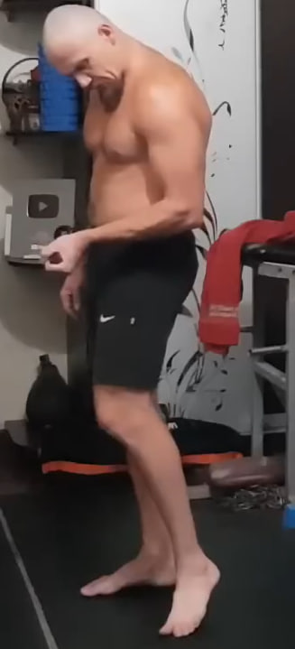
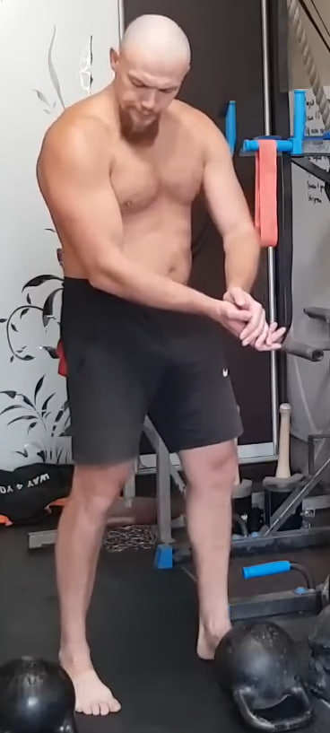
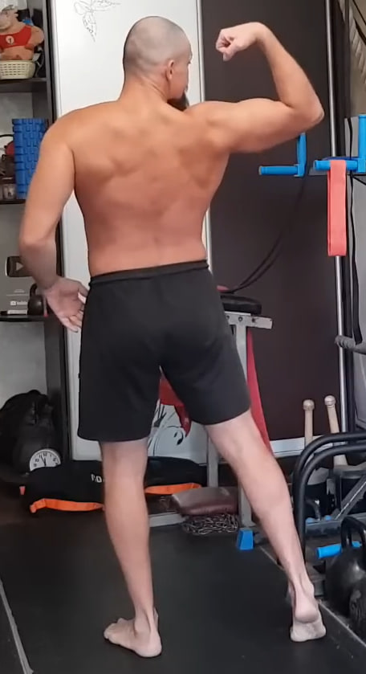
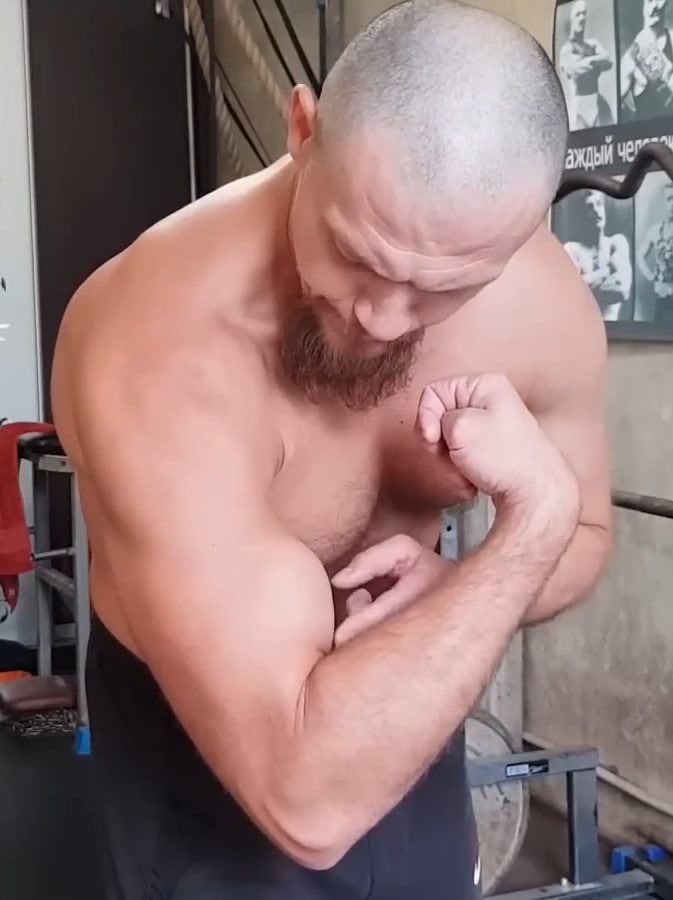
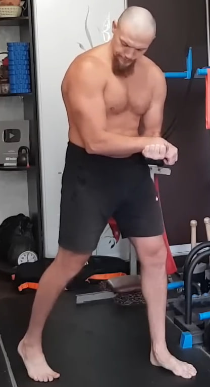
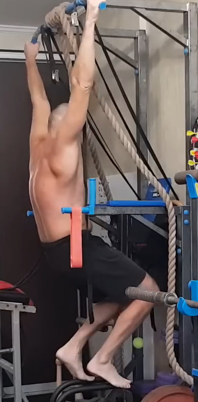
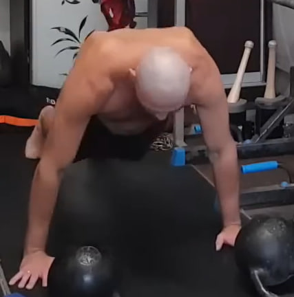

Día 5: isometría y control + agarre y antebrazos (sin equipo)
Hoy trabajamos isometría y control, agarre y antebrazos, empuje (pecho, hombros y tríceps) con ejercicios simples que caben en una habitación. El objetivo es construir fuerza útil, resistencia y control corporal con el mínimo de equipo.
Prioriza la técnica, respira con control y acumula consistencia: incluso una sesión corta suma cuando la repites día tras día.
1. Bombeo de antebrazo con agarre
Antes de empezar: haz el calentamiento y repasa la respiración. (No lo saltes.)



Aprieta con fuerza un calcetín o un trozo de tela en el puño y mueve la muñeca arriba y abajo sin soltar el agarre. El movimiento es corto, continuo y con máxima tensión para llenar de sangre el antebrazo antes del trabajo principal. Realiza 10 repeticiones por cada mano.
2. Bíceps isométrico con el brazo a 90 grados
Protocolo isométrico. Tensión de 12 segundos. Descansa hasta recuperar la respiración. Repite 10 veces. Por lado, si aplica. Más detalles en Respiración.

Flexiona el brazo de trabajo formando un ángulo cercano a 90 grados frente al cuerpo. Con la otra mano sujeta con fuerza la muñeca o el puño y empuja hacia abajo, creando resistencia. El brazo de trabajo intenta seguir flexionándose, pero la mano de apoyo bloquea el movimiento, generando una contracción profunda del bíceps. Mantén la tensión unos segundos y repite 10 veces por cada lado.
3. Bíceps isométrico con el brazo casi extendido
Protocolo isométrico. Tensión de 12 segundos. Descansa hasta recuperar la respiración. Repite 10 veces. Por lado, si aplica. Más detalles en Respiración.

Coloca el brazo de trabajo casi completamente extendido hacia abajo, dejando un pequeño ángulo en el codo. Con la otra mano sujeta el antebrazo o la muñeca y empuja hacia abajo mientras el brazo de trabajo intenta flexionarse hacia arriba. Mantén una tensión fuerte y constante en el bíceps durante unos segundos y repite 10 veces por cada brazo.
4. Supinación y poses isométricas para bíceps
Protocolo isométrico. Tensión de 12 segundos. Descansa hasta recuperar la respiración. Repite 10 veces. Por lado, si aplica. Más detalles en Respiración.




Gira la muñeca hacia afuera (supinación) y tensa el bíceps como en una pose de culturismo, manteniendo la contracción máxima. Cambia ligeramente el ángulo del codo, la altura del brazo y la posición del torso para activar diferentes fibras del bíceps. Después, realiza tensión doble con ambos brazos a la vez para ahorrar tiempo y crear un efecto sinérgico. Mantén cada pose unos segundos y completa 10 cambios de ángulo por brazo, finalizando con varias contracciones simultáneas.
5. Tríceps isométrico con el brazo a 90 grados
Protocolo isométrico. Tensión de 12 segundos. Descansa hasta recuperar la respiración. Repite 10 veces. Por lado, si aplica. Más detalles en Respiración.

Flexiona el brazo de trabajo formando un ángulo de unos 90 grados, pero esta vez colócalo por encima de la mano de apoyo. La mano inferior actúa como punto fijo y empuja hacia arriba, mientras que el brazo de trabajo intenta extenderse hacia abajo, activando intensamente el tríceps. Mantén la tensión máxima unos segundos y repite 10 veces por cada brazo.
6. Fondos en banco para tríceps con pausa isométrica
Protocolo isométrico. Tensión de 12 segundos. Descansa hasta recuperar la respiración. Repite 10 veces. Por lado, si aplica. Más detalles en Respiración.


Siéntate frente a un banco y apoya las manos en el borde. Extiende las piernas al frente y eleva la cadera para quedar en suspensión. Desciende flexionando los codos hacia atrás y luego sube casi por completo, sin bloquearlos. Repite el ciclo 10 veces, manteniendo la postura estable y los hombros controlados.
7. Rotura en tres puntos con toalla
Protocolo isométrico. Tensión de 12 segundos. Descansa hasta recuperar la respiración. Repite 10 veces. Por lado, si aplica. Más detalles en Respiración.


Utiliza una toalla, cinturón de kimono o cinta que no se estire . Trabajarás en tres posiciones: con los brazos al frente a la altura del pecho, por encima de la cabeza y abajo frente a los muslos. En cada posición intenta “romper” la toalla tirando con la máxima fuerza hacia los lados. Pasa enseguida a la siguiente posición. Las tres posiciones consecutivas cuentan como un ciclo. Completa 10 ciclos cambiando ligeramente la altura y el ángulo.
8. Colgamientos parciales con apoyo en los pies

Agarra una barra o cualquier soporte sólido que no pueda romperse. No cuelgues todo tu peso como en una dominada: deja parte del peso sobre los pies para mantener un estiramiento seguro y controlado. Relaja los hombros y permite que la columna se alargue de forma natural; si es posible, inclina ligeramente la pelvis hacia adelante para mejorar la descompresión de la espalda. Mantén el colgamiento 10 segundos, descansa brevemente y repite 10 veces.
9. Isometría para dorsal ancho detrás de la espalda
Protocolo isométrico. Tensión de 12 segundos. Descansa hasta recuperar la respiración. Repite 10 veces. Por lado, si aplica. Más detalles en Respiración.

Ponte de pie y lleva el brazo de trabajo detrás de la espalda, sujetando la muñeca o la mano con la otra mano. La mano de apoyo tira del brazo hacia abajo, mientras que la zona bajo la escápula (dorsal ancho) intenta oponerse a ese movimiento, como si quisiera mantener el hombro en su sitio y empujar ligeramente hacia arriba. La zona entre la columna, el hombro y el brazo se tensa muy fuerte de forma isométrica.
10. Burpee sin flexión


Desde la posición de plancha salta llevando los pies hacia adelante y coloca el cuerpo en posición de sentadilla baja. Desde ahí realiza un salto vertical con los brazos abajo, manteniendo el cuerpo compacto. No hay flexión de brazos en este ejercicio. Completa 10 repeticiones con un ritmo fluido y controlado.
11. Saltos en posición de plancha


Comienza en posición de plancha con los brazos extendidos. Desde ahí salta llevando los pies hacia adelante debajo del pecho y vuelve atrás a la plancha con otro salto. Mantén el abdomen firme y evita que la cadera se hunda durante el movimiento. Realiza 10 repeticiones con un ritmo elástico y controlado.